Linear Regression
Table of Contents
Notes
Accuracy
- Residual sum of squares (RSS) = \(\sum_{i=1}^n (y_i - \hat{y}_i)^2\).
- Residual standard error (RSE) = \(\sqrt{\frac{1}{n-2}\text{RSS}}\).
- \(R^2\) = 1 - \(\frac{\text{RSS}}{\text{TSS}}\).
- Total sum of squares (TSS) = \(\sum_{i=1}^n (y_i - \bar{y}_i)^2\).
Outliers & High Leverage points
- Outlier is an observation for which the predicted response is far from the recorded response.
- High leverage point is an observation for which the recorded predictors are unusual.
- High leverage points usually have more influence on the model than outliers.
- The studentized (standardized) residuals are typically expected to be between -3 and 3. If they lie outside then that indicates that there might be outliers in the data.
- The average leverage is \((p + 1) / n\). If the leverage of some observation is significantly higher than the average leverage then that is a high leverage point. (Look in to "Cook's distance".)
Exercises
Question 1
Since there are three p-values in Table 3.4, there are three null hypotheses:
- H0(1):
salesdoes not depend onTV - H0(2):
salesdoes not depend onradio - H0(3):
salesdoes not depend onnewspaper
The p-values corresponding to the first two null hypotheses are very small, less
than 10-4, whereas the p-value for the last one is close to 1. This means that
the probability of seeing the observed sales numbers if H0(1) or H0(2) is true
is almost zero, but the probability of seeing the observed sales numbers if
H0(3) is true is almost 1. In other words sales depends on TV and radio
but not on newspaper.
Question 2
A KNN classifier classifies an observation is to the class with the majority of nearest neighbors. In the KNN regression method the response is estimated as the average of all the training responses of the nearest neighbors.
Question 3
- Assuming X4 = X1 X2 and X5 = X1 X3, the linear fit model is as follows: Y = 50 + 20 X1 + 0.07 X2 + 35 X3 + 0.01 X1 X2 - 10 X3 X5. Since X3 (Gender) is 1 for females and 0 for males, this fit essentially gives two models based on the gender: Y = 85 + 10 X1 + 0.07 X2 + 0.01 X1 X2 for females, and Y = 50 + 20 X1 + 0.07 X2 + 0.01 X1 X2 for males. If X1 (GPA), and X2 (IQ), are fixed for the two genders then the starting salary for males will be more on average than the starting salary of females if X1 > 35 / 10 = 3.5; i.e. given the GPA is high enough, on average males will have a higher starting salary than females (iii).
- If IQ is 110 and GPA is 4.0 then a female is predicted to have a starting salary of $ 137,100.
- False. The scale for IQ is much larger than that of GPA or Gender. Hence the coefficients related to any IQ based predictor are expected to be small. (Possibly this is why it is often recommended to scale the predictors, so they are all on an equal footing and it is easier to figure out which ones are important.)
Question 4
- Even though the true relationship is linear, we need to take into account the irreducible error \(ϵ\). The cubic model is more flexible than the linear model and therefore will be able to better fit to the irreducible error. I expect the cubic model to have lower training RSS than the linear model.
- The linear model will have a lower test RSS than the cubic model since it matches the true relationship. The cubic model would have overfitted to the irreducible error in the training data and therefore perform worse on the test data.
- Irrespective of the true relationship I would expect the cubic model to have lower training RSS than the linear model because it is more flexible than the linear model and thus fits the training data better.
- Since we do not the true relationship between X and Y, it is difficult to say which of the two models will have lower test RSS without more information.
Question 5
We just have to substitute equation 3.38 in to the equation for the \(i\)th fitted value and rearrange the equation:
\begin{align} a_{i'} = \frac{x_i x_{i'}}{\sum_{k=1}^n x_k^2}. \end{align}Question 6
The equation for the least squares line is \(y = \hat{\beta}_0 + \hat{\beta}_1 x\). From equation 3.4 we have \(\hat{\beta}_0 = \bar{y} - \hat{\beta}_1 \bar{x}\). Then putting \(x = \bar{x}\) in the least squares line equation we see that \(y = \bar{y}\). Thus the least squares line always passes through \((\bar{x}, \bar{y})\).
Question 7
Assumption: \(\bar{x} = \bar{y} = 0\). From equation 3.4 we have \(\hat{y}_i = \hat{\beta}_1 x_i\), where
\begin{align} \hat{\beta}_1 = \frac{\sum_{i=1}^n x_i y_i}{\sum_{i=1}^n x_i^2}. \end{align}And from equation 3.17 we have
\begin{align} R^2 = 1 - \frac{\sum_{i=1}^n (y_i - \hat{y}_i)^2}{\sum_{i=1}^n y_i^2}. \end{align}Expanding the square in the numerator of the above fraction and substituting \(\hat{y}_i\) with \(\hat{\beta}_1 x_i\) we get
\begin{align} R^2 = \frac{\hat{\beta}_1(2 \sum_{i=1}^n x_iy_i - \hat{\beta}_1 \sum_{i=1}^n x_i^2)}{\sum_{i=1}^n y_i^2}. \end{align}Now if we simply substitute the above form of \(\hat{\beta}_1\) in to this equation we will see that \(R^2 = \mathrm{Cor}(X, Y)^2\), where \(\mathrm{Cor}(X, Y)\) is given by equation 3.18.
Question 8
Simple linear regression on Auto data set
import pandas as pd import numpy as np from tabulate import tabulate auto = pd.read_csv("data/Auto.csv") print(tabulate(auto.head(), auto.columns, tablefmt="orgtbl"))
| | mpg | cylinders | displacement | horsepower | weight | acceleration | year | origin | name | |----+-------+-------------+----------------+--------------+----------+----------------+--------+----------+---------------------------| | 0 | 18 | 8 | 307 | 130 | 3504 | 12 | 70 | 1 | chevrolet chevelle malibu | | 1 | 15 | 8 | 350 | 165 | 3693 | 11.5 | 70 | 1 | buick skylark 320 | | 2 | 18 | 8 | 318 | 150 | 3436 | 11 | 70 | 1 | plymouth satellite | | 3 | 16 | 8 | 304 | 150 | 3433 | 12 | 70 | 1 | amc rebel sst | | 4 | 17 | 8 | 302 | 140 | 3449 | 10.5 | 70 | 1 | ford torino |
Recall from the last chapter horsepower has some missing values and needs to
be converted to a numeric form before we can use this for linear regression.
auto.drop(auto[auto.horsepower == "?"].index, inplace=True) auto["horsepower"] = pd.to_numeric(auto["horsepower"])
For simple linear regression we can use the ordinary least squares model from
statsmodels or the linear regression model from scikit-learn. In this
question we are asked to print the summary of the fitted model. scikit-learn
has no method for generating a summary, but statsmodels does.
import statsmodels.formula.api as smf model = smf.ols(formula="mpg~horsepower", data=auto).fit() print(model.summary())
OLS Regression Results
==============================================================================
Dep. Variable: mpg R-squared: 0.606
Model: OLS Adj. R-squared: 0.605
Method: Least Squares F-statistic: 599.7
Date: Mon, 25 May 2020 Prob (F-statistic): 7.03e-81
Time: 17:19:34 Log-Likelihood: -1178.7
No. Observations: 392 AIC: 2361.
Df Residuals: 390 BIC: 2369.
Df Model: 1
Covariance Type: nonrobust
==============================================================================
coef std err t P>|t| [0.025 0.975]
------------------------------------------------------------------------------
Intercept 39.9359 0.717 55.660 0.000 38.525 41.347
horsepower -0.1578 0.006 -24.489 0.000 -0.171 -0.145
==============================================================================
Omnibus: 16.432 Durbin-Watson: 0.920
Prob(Omnibus): 0.000 Jarque-Bera (JB): 17.305
Skew: 0.492 Prob(JB): 0.000175
Kurtosis: 3.299 Cond. No. 322.
==============================================================================
Warnings:
[1] Standard Errors assume that the covariance matrix of the errors is correctly specified.
- The F-statistic is much larger than 1, and the p-value (
P>|t|in the table) is zero. This indicates that there is a relationship betweenmpgandhorsepower. - The \(R^2\) value of 0.606 indicates that this relationship explains around
61% of the
mpgvalues. - The coefficient value corresponding to
horsepoweris negative. This indicates that the relation betweenmpgandhorsepoweris negative. pred = model.get_prediction(exog=dict(horsepower=98)) pred_summary = pred.summary_frame() print(tabulate(pred_summary, pred_summary.columns, tablefmt="orgtbl"))
| | mean | mean_se | mean_ci_lower | mean_ci_upper | obs_ci_lower | obs_ci_upper | |----+---------+-----------+-----------------+-----------------+----------------+----------------| | 0 | 24.4671 | 0.251262 | 23.9731 | 24.9611 | 14.8094 | 34.1248 |
The predicted
mpgforhorsepower= 98 is 24.4671. The 95% confidence interval is \([23.9731, 24.9611]\), and the 95% prediction interval is \([14.8094, 34.1248]\). As mentioned in the text, the prediction interval contains the confidence interval.
Least squares plot
import matplotlib.pyplot as plt import seaborn as sns sns.set_style("ticks") X = auto["horsepower"] Y = auto["mpg"] Ypred = model.predict(X) plt.close("all") fig, ax = plt.subplots() ax.plot(X, Y, 'o', label="Data") ax.plot(X, Ypred, 'r', label="Least Squares Regression") ax.legend(loc="best") sns.despine() fig.savefig("img/3_auto_ls.png", dpi=90)
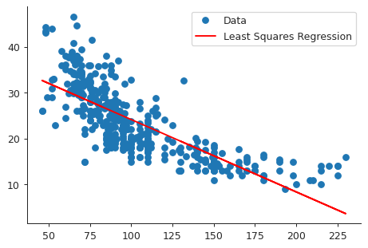
Diagnostic plots
The R command plot in this case gives four diagnostic plots:
- Residuals vs Fitted
- Normal Q-Q
- Scale-Location
- Residuals vs Leverage
The Residuals vs Fitted plot shows any non-linear pattern in the residuals, and by extension in the data. The Normal Q-Q plot shows if the residuals are normally distributed. The Scale-Location plot shows if there is heteroscedasticity. The Residuals vs Leverage plot shows if there are leverages in the data.
We will produce these plots using statsmodels and seaborn.
- Residuals vs Fitted plot
fitted_vals = model.fittedvalues plt.close("all") fig, ax = plt.subplots() residplot = sns.residplot(x=fitted_vals, y="mpg", data=auto, lowess=True, line_kws={"color": "red"}, ax=ax) ax.set_xlabel("Fitted values") ax.set_ylabel("Residuals") sns.despine() fig.savefig("img/3_res_vs_fit.png", dpi=90)
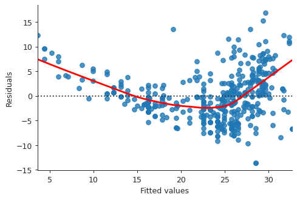
This plot clearly shows that there is non-linearity in the data.
- Normal Q-Q plot
import statsmodels.api as sm residuals = model.resid plt.close("all") fig, ax = plt.subplots() qqplot = sm.qqplot(residuals, line='45', ax=ax, fit=True) ax.set_ylabel("Standardized Residuals") sns.despine() fig.savefig("img/3_auto_qq.png", dpi=90)
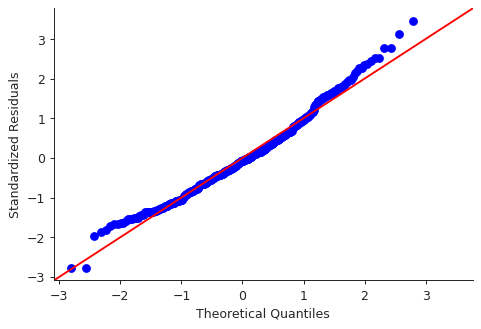
Though there are some points that are far from the \(45^\circ\) fitted line, most of the points lie close to the line, indicating that the residuals are mostly normally distributed.
- Scale-Location plot
# normalized residuals and their square roots norm_residuals = model.get_influence().resid_studentized_internal norm_residuals_abs_sqrt = np.sqrt(np.abs(norm_residuals)) plt.close("all") fig, ax = plt.subplots() slplot = sns.regplot(fitted_vals, norm_residuals_abs_sqrt, lowess=True, line_kws={"color" : "red"}, ax=ax) ax.set_xlabel("Fitted values") ax.set_ylabel("Sqrt of |Standardized Residuals|") sns.despine() fig.savefig("img/3_auto_scale_loc.png", dpi=90)
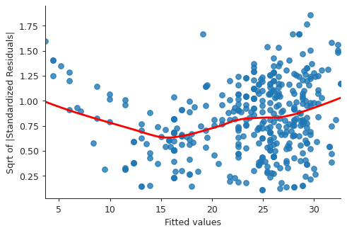
This plot is similar to the first diagnostic plots, except now the quantity on the y-axis is positive. This shows that homoscedasticity is not held, i.e. the variance is not constant.
- Residuals vs Leverage plot
plt.close("all") fig, ax = plt.subplots() rlplot = sm.graphics.influence_plot(model, criterion="Cooks", ax=ax) sns.despine() ax.set_xlabel("Leverage") ax.set_ylabel("Standardized Residuals") ax.set_title(" ") fig.savefig("img/3_auto_res_vs_lev.png", dpi=90)
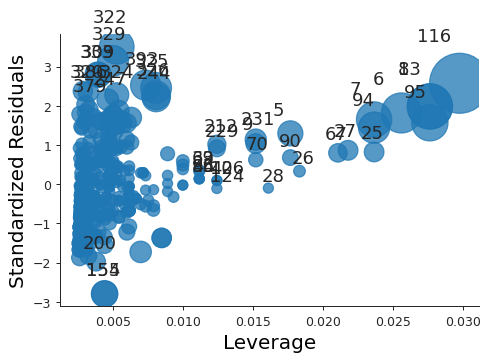
We see that none of the points have a very high leverage.
Question 9
Scatter plot matrix of Auto data set
plt.close("all") spm = sns.pairplot(auto, plot_kws = {'s': 10}) spm.fig.set_size_inches(12, 12) spm.savefig("img/3_auto_scatter.png", dpi=90)
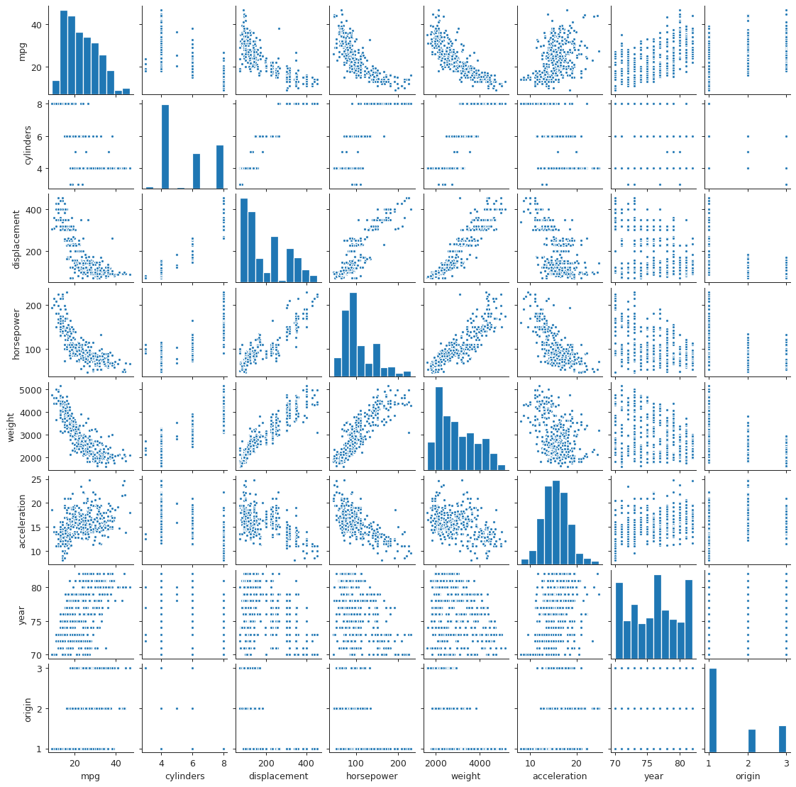
Correlation matrix
I find heat maps to be better for visualizing correlation matrices than tables. Since the correlation matrix is symmetric we can ignore either of the lower or the upper triangles. We can also ignore the diagonal since it is always going to be 1.
corr_mat = auto[auto.columns[:-1]].corr() plt.close("all") fig, ax = plt.subplots() # Custom diverging color map. cmap = sns.diverging_palette(220, 10, sep=80, n=7) # Mask for upper triangle. mask = np.triu(np.ones_like(corr_mat, dtype=np.bool)) with sns.axes_style("white"): sns.heatmap(corr_mat, mask=mask, cmap=cmap, annot=True, robust=True, ax=ax) fig.savefig("img/3_auto_corr_heat.png")
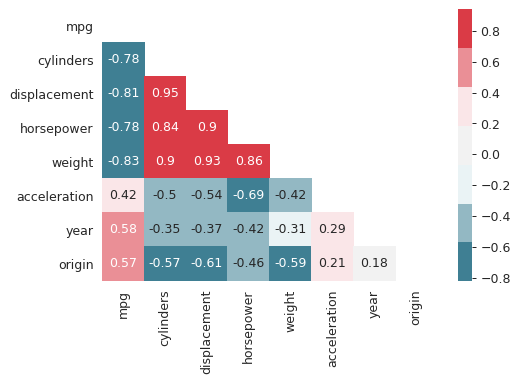
We see that mpg has considerable negative correlations with cylinders,
displacement, horsepower, and weight. This matches what we saw in the
scatter plot matrix above. Similarly cylinders, displacement, horsepower
and weight are all correlated with each other.
Multiple linear regression with Auto data set
We could do this with the statsmodels.formula API but that involves more
typing, so we will use the statsmodels API.
import statsmodels.api as sm Y = auto["mpg"] X = auto[auto.columns[1:-1]] X = sm.add_constant(X) # For the intercept. ml_model = sm.OLS(Y, X).fit() print(ml_model.summary())
OLS Regression Results
==============================================================================
Dep. Variable: mpg R-squared: 0.821
Model: OLS Adj. R-squared: 0.818
Method: Least Squares F-statistic: 252.4
Date: Mon, 25 May 2020 Prob (F-statistic): 2.04e-139
Time: 17:25:25 Log-Likelihood: -1023.5
No. Observations: 392 AIC: 2063.
Df Residuals: 384 BIC: 2095.
Df Model: 7
Covariance Type: nonrobust
================================================================================
coef std err t P>|t| [0.025 0.975]
--------------------------------------------------------------------------------
const -17.2184 4.644 -3.707 0.000 -26.350 -8.087
cylinders -0.4934 0.323 -1.526 0.128 -1.129 0.142
displacement 0.0199 0.008 2.647 0.008 0.005 0.035
horsepower -0.0170 0.014 -1.230 0.220 -0.044 0.010
weight -0.0065 0.001 -9.929 0.000 -0.008 -0.005
acceleration 0.0806 0.099 0.815 0.415 -0.114 0.275
year 0.7508 0.051 14.729 0.000 0.651 0.851
origin 1.4261 0.278 5.127 0.000 0.879 1.973
==============================================================================
Omnibus: 31.906 Durbin-Watson: 1.309
Prob(Omnibus): 0.000 Jarque-Bera (JB): 53.100
Skew: 0.529 Prob(JB): 2.95e-12
Kurtosis: 4.460 Cond. No. 8.59e+04
==============================================================================
Warnings:
[1] Standard Errors assume that the covariance matrix of the errors is correctly specified.
[2] The condition number is large, 8.59e+04. This might indicate that there are
strong multicollinearity or other numerical problems.
- The large F-statistic indicates that we can ignore the null hypothesis, which
says that the response
mpgdoes not depend on the predictors. The probability that this data could be generated if the null hypothesis was true is essentially zero (2.04E-139). - Looking at the p-values of the individual predictors we see that
weight,year, andoriginhave the most statistically significant relation withmpg. We can also argue thatdisplacementhas a somewhat significant relation withmpg. On the other handcylinders,horsepower, andaccelerationdo not have a significant statistical relationship. This is not necessarily surprising. Given the correlation betweenmpg,displacement,cylindersandhorsepowerI think one can argue that the information incylindersandhorsepoweris redundant. - The coefficient for the
yearvariable suggests that every year thempgincreases by0.7508, i.e. the cars become more fuel-efficient every year.
Diagnostic plots
We make the same diagnostic plots as the previous exercise.
- Residuals vs Fitted plot
fitted_vals = ml_model.fittedvalues plt.close("all") fig, ax = plt.subplots() residplot = sns.residplot(x=fitted_vals, y="mpg", data=auto, lowess=True, line_kws={"color": "red"}, ax=ax) ax.set_xlabel("Fitted values") ax.set_ylabel("Residuals") sns.despine() fig.savefig("img/3_ml_res_vs_fit.png", dpi=90)
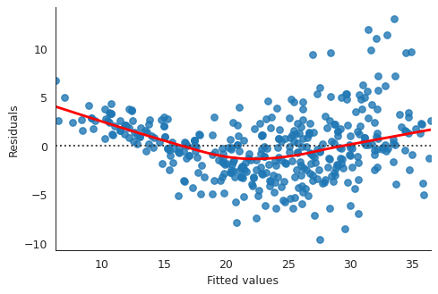
This plot clearly shows that there is non-linearity in the data.
- Normal Q-Q plot
import statsmodels.api as sm residuals = ml_model.resid plt.close("all") fig, ax = plt.subplots() qqplot = sm.qqplot(residuals, line='45', ax=ax, fit=True) ax.set_ylabel("Standardized Residuals") sns.despine() fig.savefig("img/3_ml_auto_qq.png", dpi=90)
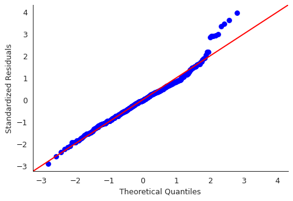
Though there are some points that are far from the \(45^\circ\) fitted line, most of the points lie close to the line, indicating that the residuals are mostly normally distributed.
- Scale-Location plot
# normalized residuals and their square roots norm_residuals = ml_model.get_influence().resid_studentized_internal norm_residuals_abs_sqrt = np.sqrt(np.abs(norm_residuals)) plt.close("all") fig, ax = plt.subplots() slplot = sns.regplot(fitted_vals, norm_residuals_abs_sqrt, lowess=True, line_kws={"color" : "red"}, ax=ax) ax.set_xlabel("Fitted values") ax.set_ylabel("Sqrt of |Standardized Residuals|") sns.despine() fig.savefig("img/3_ml_auto_scale_loc.png", dpi=90)
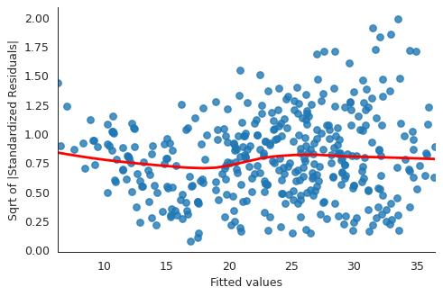
The variance in the standardized residuals is less as compared to the single regression plot, but there is still quite a bit of variance, which means homoscedasticity is not held.
- Residuals vs Leverage plot
plt.close("all") fig, ax = plt.subplots() rlplot = sm.graphics.influence_plot(ml_model, criterion="Cooks", ax=ax) sns.despine() ax.set_xlabel("Leverage") ax.set_ylabel("Standardized Residuals") ax.set_title(" ") fig.savefig("img/3_ml_auto_res_vs_lev.png", dpi=90)
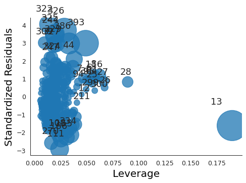
Point 13 has a high leverage but not a very high residual.
Interaction effects
We go back to the statsmodels.formula API. Additionally I will drop
cylinders, horsepower, and acceleration from the model. I will try the
following interaction terms:
year : origin: this will add a new predictor which is a product ofyearandorigin, but will not includeyearandoriginseparately,year * origin: this will add the product ofyearandorigin, but also includeyearandoriginseparately,year * weight: same as the above, except forweightin place oforigin.
ml_model_1 = smf.ols(formula="mpg ~ displacement + weight + year : origin", data=auto).fit() ml_model_2 = smf.ols(formula="mpg ~ displacement + weight + year * origin", data=auto).fit() ml_model_3 = smf.ols(formula="mpg ~ displacement + weight * year + origin", data=auto).fit()
- Summary of first interaction model
print(ml_model_1.summary())
OLS Regression Results ============================================================================== Dep. Variable: mpg R-squared: 0.714 Model: OLS Adj. R-squared: 0.712 Method: Least Squares F-statistic: 322.7 Date: Mon, 25 May 2020 Prob (F-statistic): 4.85e-105 Time: 18:13:04 Log-Likelihood: -1115.9 No. Observations: 392 AIC: 2240. Df Residuals: 388 BIC: 2256. Df Model: 3 Covariance Type: nonrobust ================================================================================ coef std err t P>|t| [0.025 0.975] -------------------------------------------------------------------------------- Intercept 39.8822 1.427 27.939 0.000 37.076 42.689 displacement -0.0100 0.006 -1.728 0.085 -0.021 0.001 weight -0.0056 0.001 -8.137 0.000 -0.007 -0.004 year:origin 0.0193 0.004 4.502 0.000 0.011 0.028 ============================================================================== Omnibus: 41.720 Durbin-Watson: 0.883 Prob(Omnibus): 0.000 Jarque-Bera (JB): 68.034 Skew: 0.674 Prob(JB): 1.69e-15 Kurtosis: 4.532 Cond. No. 2.09e+04 ============================================================================== Warnings: [1] Standard Errors assume that the covariance matrix of the errors is correctly specified. [2] The condition number is large, 2.09e+04. This might indicate that there are strong multicollinearity or other numerical problems.The large F-statistic invalidates the null hypothesis. The individual p-values show that
displacementis not really significant, but the product ofyearandoriginis. Additionally the \(R^2\) value tells us that this model explains around 71% of thempgvalues. - Summary of second interaction model
print(ml_model_2.summary())
OLS Regression Results ============================================================================== Dep. Variable: mpg R-squared: 0.823 Model: OLS Adj. R-squared: 0.821 Method: Least Squares F-statistic: 359.5 Date: Mon, 25 May 2020 Prob (F-statistic): 8.65e-143 Time: 18:17:24 Log-Likelihood: -1021.6 No. Observations: 392 AIC: 2055. Df Residuals: 386 BIC: 2079. Df Model: 5 Covariance Type: nonrobust ================================================================================ coef std err t P>|t| [0.025 0.975] -------------------------------------------------------------------------------- Intercept 7.9270 8.873 0.893 0.372 -9.519 25.373 displacement 0.0016 0.005 0.319 0.750 -0.008 0.011 weight -0.0064 0.001 -11.571 0.000 -0.007 -0.005 year 0.4313 0.113 3.818 0.000 0.209 0.653 origin -14.4936 4.707 -3.079 0.002 -23.749 -5.239 year:origin 0.2023 0.060 3.345 0.001 0.083 0.321 ============================================================================== Omnibus: 38.636 Durbin-Watson: 1.322 Prob(Omnibus): 0.000 Jarque-Bera (JB): 71.804 Skew: 0.584 Prob(JB): 2.56e-16 Kurtosis: 4.741 Cond. No. 1.84e+05 ============================================================================== Warnings: [1] Standard Errors assume that the covariance matrix of the errors is correctly specified. [2] The condition number is large, 1.84e+05. This might indicate that there are strong multicollinearity or other numerical problems.The \(R^2\) value has increased; it is now almost the same as the \(R^2\) value for the model with all the quantitative predictors but no interaction. This model explains around 82% of the
mpgvalues. Additionally we see thatyearis more significant thanoriginor the product ofyearandorigin. Also, in addition todisplacement, the intercept term appears to be insignificant too. - Summary of third interaction model
print(ml_model_3.summary())
OLS Regression Results ============================================================================== Dep. Variable: mpg R-squared: 0.840 Model: OLS Adj. R-squared: 0.838 Method: Least Squares F-statistic: 404.4 Date: Mon, 25 May 2020 Prob (F-statistic): 5.53e-151 Time: 18:22:57 Log-Likelihood: -1002.4 No. Observations: 392 AIC: 2017. Df Residuals: 386 BIC: 2041. Df Model: 5 Covariance Type: nonrobust ================================================================================ coef std err t P>|t| [0.025 0.975] -------------------------------------------------------------------------------- Intercept -107.6004 12.904 -8.339 0.000 -132.971 -82.229 displacement -0.0004 0.005 -0.088 0.930 -0.009 0.009 weight 0.0260 0.005 5.722 0.000 0.017 0.035 year 1.9624 0.172 11.436 0.000 1.625 2.300 weight:year -0.0004 5.97e-05 -7.214 0.000 -0.001 -0.000 origin 0.9116 0.255 3.579 0.000 0.411 1.412 ============================================================================== Omnibus: 43.792 Durbin-Watson: 1.372 Prob(Omnibus): 0.000 Jarque-Bera (JB): 89.759 Skew: 0.619 Prob(JB): 3.23e-20 Kurtosis: 4.991 Cond. No. 1.90e+07 ============================================================================== Warnings: [1] Standard Errors assume that the covariance matrix of the errors is correctly specified. [2] The condition number is large, 1.9e+07. This might indicate that there are strong multicollinearity or other numerical problems.The \(R^2\) increased a bit, and it appears other than
displacementall the other predictors are significant. - Interaction model with two interactions
We will try an additional model with two interactions:
displacement * weightandweight * year.ml_model_4 = smf.ols("mpg ~ displacement * weight + weight * year + origin", data=auto).fit() print(ml_model_4.summary())
OLS Regression Results ============================================================================== Dep. Variable: mpg R-squared: 0.859 Model: OLS Adj. R-squared: 0.856 Method: Least Squares F-statistic: 389.6 Date: Mon, 25 May 2020 Prob (F-statistic): 4.10e-160 Time: 18:33:39 Log-Likelihood: -977.80 No. Observations: 392 AIC: 1970. Df Residuals: 385 BIC: 1997. Df Model: 6 Covariance Type: nonrobust ======================================================================================= coef std err t P>|t| [0.025 0.975] --------------------------------------------------------------------------------------- Intercept -61.3985 13.741 -4.468 0.000 -88.416 -34.381 displacement -0.0604 0.009 -6.424 0.000 -0.079 -0.042 weight 0.0090 0.005 1.848 0.065 -0.001 0.019 displacement:weight 1.708e-05 2.38e-06 7.169 0.000 1.24e-05 2.18e-05 year 1.4982 0.174 8.616 0.000 1.156 1.840 weight:year -0.0002 6.16e-05 -4.037 0.000 -0.000 -0.000 origin 0.3388 0.253 1.342 0.181 -0.158 0.835 ============================================================================== Omnibus: 62.892 Durbin-Watson: 1.412 Prob(Omnibus): 0.000 Jarque-Bera (JB): 174.597 Skew: 0.754 Prob(JB): 1.22e-38 Kurtosis: 5.901 Cond. No. 8.00e+07 ============================================================================== Warnings: [1] Standard Errors assume that the covariance matrix of the errors is correctly specified. [2] The condition number is large, 8e+07. This might indicate that there are strong multicollinearity or other numerical problems.This is interesting. We see that the \(R^2\) value has increased further, but now
displacementhas become significant whereasweightandoriginhave become relatively insignificant. The interaction terms are still significant. My understanding of this model is that whileweightdoes not directly affectmpg, it increasesdisplacement, and that affects thempg.
Models with variable transformations
ml_model_trans = smf.ols(formula="mpg ~ np.log(weight) + np.power(weight, 2) + year", data=auto).fit() print(ml_model_trans.summary())
OLS Regression Results
==============================================================================
Dep. Variable: mpg R-squared: 0.851
Model: OLS Adj. R-squared: 0.850
Method: Least Squares F-statistic: 749.0
Date: Mon, 25 May 2020 Prob (F-statistic): 4.19e-162
Time: 18:49:50 Log-Likelihood: -1001.5
No. Observations: 397 AIC: 2011.
Df Residuals: 393 BIC: 2027.
Df Model: 3
Covariance Type: nonrobust
=======================================================================================
coef std err t P>|t| [0.025 0.975]
---------------------------------------------------------------------------------------
Intercept 213.1803 16.063 13.271 0.000 181.599 244.761
np.log(weight) -32.5971 2.150 -15.159 0.000 -36.825 -28.369
np.power(weight, 2) 6.506e-07 1.12e-07 5.804 0.000 4.3e-07 8.71e-07
year 0.8355 0.044 19.023 0.000 0.749 0.922
==============================================================================
Omnibus: 69.088 Durbin-Watson: 1.361
Prob(Omnibus): 0.000 Jarque-Bera (JB): 168.823
Skew: 0.864 Prob(JB): 2.19e-37
Kurtosis: 5.687 Cond. No. 1.17e+09
==============================================================================
Warnings:
[1] Standard Errors assume that the covariance matrix of the errors is correctly specified.
[2] The condition number is large, 1.17e+09. This might indicate that there are
strong multicollinearity or other numerical problems.
The F-statistic and the p-values indicate that these transformations are statistically significant.
Question 10
Multiple regression with Carseats data set
So far I had been loading the data sets from local .csv files, but I recently
found out that statsmodels makes them automatically available using the
Rdatasets project. So going forward I will be using that whenever possible.
import statsmodels.api as sm carseats = sm.datasets.get_rdataset("Carseats", package="ISLR") print(carseats.__doc__)
+----------+-----------------+ | Carseats | R Documentation | +----------+-----------------+ Sales of Child Car Seats ------------------------ Description ~~~~~~~~~~~ A simulated data set containing sales of child car seats at 400 different stores. Usage ~~~~~ :: Carseats Format ~~~~~~ A data frame with 400 observations on the following 11 variables. ``Sales`` Unit sales (in thousands) at each location ``CompPrice`` Price charged by competitor at each location ``Income`` Community income level (in thousands of dollars) ``Advertising`` Local advertising budget for company at each location (in thousands of dollars) ``Population`` Population size in region (in thousands) ``Price`` Price company charges for car seats at each site ``ShelveLoc`` A factor with levels ``Bad``, ``Good`` and ``Medium`` indicating the quality of the shelving location for the car seats at each site ``Age`` Average age of the local population ``Education`` Education level at each location ``Urban`` A factor with levels ``No`` and ``Yes`` to indicate whether the store is in an urban or rural location ``US`` A factor with levels ``No`` and ``Yes`` to indicate whether the store is in the US or not Source ~~~~~~ Simulated data References ~~~~~~~~~~ James, G., Witten, D., Hastie, T., and Tibshirani, R. (2013) *An Introduction to Statistical Learning with applications in R*, `www.StatLearning.com <www.StatLearning.com>`__, Springer-Verlag, New York Examples ~~~~~~~~ :: summary(Carseats) lm.fit=lm(Sales~Advertising+Price,data=Carseats)
Multiple linear regression to predict Sales using Price, Urban, and US.
import statsmodels.formula.api as smf model = smf.ols(formula="Sales ~ Price + Urban + US", data=carseats.data).fit() print(model.summary())
OLS Regression Results
==============================================================================
Dep. Variable: Sales R-squared: 0.239
Model: OLS Adj. R-squared: 0.234
Method: Least Squares F-statistic: 41.52
Date: Thu, 28 May 2020 Prob (F-statistic): 2.39e-23
Time: 18:21:58 Log-Likelihood: -927.66
No. Observations: 400 AIC: 1863.
Df Residuals: 396 BIC: 1879.
Df Model: 3
Covariance Type: nonrobust
================================================================================
coef std err t P>|t| [0.025 0.975]
--------------------------------------------------------------------------------
Intercept 13.0435 0.651 20.036 0.000 11.764 14.323
Urban[T.Yes] -0.0219 0.272 -0.081 0.936 -0.556 0.512
US[T.Yes] 1.2006 0.259 4.635 0.000 0.691 1.710
Price -0.0545 0.005 -10.389 0.000 -0.065 -0.044
==============================================================================
Omnibus: 0.676 Durbin-Watson: 1.912
Prob(Omnibus): 0.713 Jarque-Bera (JB): 0.758
Skew: 0.093 Prob(JB): 0.684
Kurtosis: 2.897 Cond. No. 628.
==============================================================================
Warnings:
[1] Standard Errors assume that the covariance matrix of the errors is correctly specified.
The F-statistic is larger than 1, though much smaller compared to the F-statistics in the last problem. I think this means that the alternative hypothesis is viable, but not completely sure about that.
From the individual p-values we can conclude that Urban is not a statistically
significant predictor for Sales.
Interpretation of coefficient of predictors
Since Urban is not a statistically significant predictor we do not need to
worry about its coefficient. The coefficient for US indicates that if the
store is in the US then it then the sales will increase by about 1200 units. On
the other hand the coefficient for Price says that an increase in price will
result in a decrease in sales.
Linear model equation
The equation for this model is
\begin{align} Y = 13.04 - 0.02 X_1 + 1.20 X_2 - 0.05 X_3, \end{align}
where \(Y\), \(X_1\), \(X_2\), and \(X_3\) stand for Sales, Urban, US, and
Price, respectively. \(X_1 = 1\) if the store is an urban location, and \(0\)
otherwise. Similarly \(X_2 = 1\) if the store is in the US, and \(0\) if it is
not.
Null hypothesis rejection
We can reject the null hypothesis for US, and Price, since the associated
p-values are effectively 0.
Smaller multiple linear model for Carseats sales
small_model = smf.ols(formula="Sales ~ US + Price", data=carseats.data).fit() print(small_model.summary())
OLS Regression Results
==============================================================================
Dep. Variable: Sales R-squared: 0.239
Model: OLS Adj. R-squared: 0.235
Method: Least Squares F-statistic: 62.43
Date: Thu, 28 May 2020 Prob (F-statistic): 2.66e-24
Time: 18:45:15 Log-Likelihood: -927.66
No. Observations: 400 AIC: 1861.
Df Residuals: 397 BIC: 1873.
Df Model: 2
Covariance Type: nonrobust
==============================================================================
coef std err t P>|t| [0.025 0.975]
------------------------------------------------------------------------------
Intercept 13.0308 0.631 20.652 0.000 11.790 14.271
US[T.Yes] 1.1996 0.258 4.641 0.000 0.692 1.708
Price -0.0545 0.005 -10.416 0.000 -0.065 -0.044
==============================================================================
Omnibus: 0.666 Durbin-Watson: 1.912
Prob(Omnibus): 0.717 Jarque-Bera (JB): 0.749
Skew: 0.092 Prob(JB): 0.688
Kurtosis: 2.895 Cond. No. 607.
==============================================================================
Warnings:
[1] Standard Errors assume that the covariance matrix of the errors is correctly specified.
Based on the \(R^2\) values both the models fit the data similarly.
Confidence intervals of fitted parameters
print(small_model.conf_int())
0 1
Intercept 11.79032 14.271265
US[T.Yes] 0.69152 1.707766
Price -0.06476 -0.044195
The confidence intervals are also printed in the summary, but this is probably more convenient.
Outliers and leverages
To see if there are any leverage points we need to first calculate the average leverage, \((p + 1) / n\), for the data.
npredictors = 2 nobservations = len(carseats.data) avg_leverage = (npredictors + 1) / nobservations print(f"Average leverage: {avg_leverage}")
Average leverage: 0.0075
The Residuals vs Leverage plot is the easiest way to check for outliers and high leverage observations.
import matplotlib.pyplot as plt import seaborn as sns sns.set_style("ticks") plt.close("all") fig, ax = plt.subplots() rlplot = sm.graphics.influence_plot(small_model, criterion="Cooks", ax=ax) sns.despine() ax.set_xlabel("Leverage") ax.set_ylabel("Standardized Residuals") ax.set_title(" ") fig.savefig("img/3.10.h_res_vs_lev.png", dpi=90)
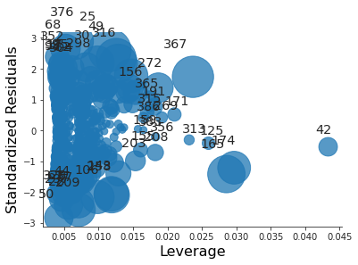
All the residuals are between -3 and 3, so there are no outliers. However there are a lot of points whose leverage greatly exceeds the average leverage. Thus there are high leverage observations.
Question 11
Simple linear regression with synthetic data
import pandas as pd import numpy as np import matplotlib.pyplot as plt import seaborn as sns sns.set_style("ticks") rng = np.random.default_rng(seed=42) x = rng.normal(size=100) y = 2 * x + rng.normal(size=100) data = pd.DataFrame({"X" : x, "Y" : y}) plt.close("all") fig, ax = plt.subplots() sp = sns.scatterplot(x="X", y="Y", data=data, ax=ax) sns.despine() fig.savefig("img/3.11.a_data.png", dpi=90)
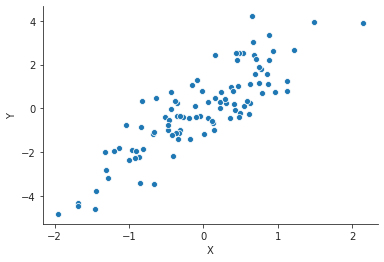
Now we do a simple linear regression with this synthetic data. This model will not have an intercept: \(Y = βX\).
import statsmodels.formula.api as smf model = smf.ols("Y ~ X - 1", data=data).fit() print(model.summary())
OLS Regression Results
=======================================================================================
Dep. Variable: Y R-squared (uncentered): 0.741
Model: OLS Adj. R-squared (uncentered): 0.738
Method: Least Squares F-statistic: 283.3
Date: Fri, 29 May 2020 Prob (F-statistic): 8.30e-31
Time: 07:28:26 Log-Likelihood: -138.87
No. Observations: 100 AIC: 279.7
Df Residuals: 99 BIC: 282.4
Df Model: 1
Covariance Type: nonrobust
==============================================================================
coef std err t P>|t| [0.025 0.975]
------------------------------------------------------------------------------
X 2.1196 0.126 16.833 0.000 1.870 2.369
==============================================================================
Omnibus: 2.995 Durbin-Watson: 1.681
Prob(Omnibus): 0.224 Jarque-Bera (JB): 2.970
Skew: 0.408 Prob(JB): 0.227
Kurtosis: 2.787 Cond. No. 1.00
==============================================================================
Warnings:
[1] Standard Errors assume that the covariance matrix of the errors is correctly specified.
The coefficient estimate is \(\hat{β} = 2.1196\) with a standard error of \(0.126\). The t-statistic is 16.833 and the associated p-value is 0. This means we can reject the null hypothesis.
Inverse simple linear relation with synthetic data
We are going to use the same data, but now with X as the response and Y as
the predictor.
model2 = smf.ols("X ~ Y - 1", data=data).fit() print(model2.summary())
OLS Regression Results
=======================================================================================
Dep. Variable: X R-squared (uncentered): 0.741
Model: OLS Adj. R-squared (uncentered): 0.738
Method: Least Squares F-statistic: 283.3
Date: Fri, 29 May 2020 Prob (F-statistic): 8.30e-31
Time: 07:36:14 Log-Likelihood: -48.770
No. Observations: 100 AIC: 99.54
Df Residuals: 99 BIC: 102.1
Df Model: 1
Covariance Type: nonrobust
==============================================================================
coef std err t P>|t| [0.025 0.975]
------------------------------------------------------------------------------
Y 0.3496 0.021 16.833 0.000 0.308 0.391
==============================================================================
Omnibus: 1.369 Durbin-Watson: 1.557
Prob(Omnibus): 0.504 Jarque-Bera (JB): 1.145
Skew: -0.020 Prob(JB): 0.564
Kurtosis: 2.477 Cond. No. 1.00
==============================================================================
Warnings:
[1] Standard Errors assume that the covariance matrix of the errors is correctly specified.
The coefficient estimate is \(\hat{β} = 0.3496\) with a standard error of \(0.021\). The t-statistic is \(16.833\) and the associated p-value is 0. This means we can reject the null hypothesis.
Relation between the two regressions
Given the underlying true model we should have expected that the coefficients of the two models would be multiplicative inverses of each other. But they are not. The reason being that the two models are minimizing different residual sum of squares. For the two models the residual sum of squares are
\begin{align} \mathrm{RSS}^{(1)} &= ∑_{i=1}^n (y_i - \hat{β}^(1) x_i)^2, \\ \mathrm{RSS}^{(2)} &= ∑_{i=1}^n (x_i - \hat{β}^(2) y_i)^2, \end{align}respectively. \(\mathrm{RSS}^(1)\) is minimized when \(\hat{β}^(1) = ∑y_i x_i / ∑ x_i^2\), and \(\mathrm{RSS}^(2)\) is minimized when \(\hat{β}^(2) = ∑x_i y_i / ∑ y_i^2\). If \(\hat{β}^(1) = 1 / \hat{β}^(2)\) then we have
\begin{align} (∑_{i=1}^n x_i y_i)^2 = ∑_{i=1}^n x_i^2 ∑_{i=1}^n y_i^2. \end{align}Since here \(X\) and \(Y\) are random variables with zero mean we can interpret the above equation as
\begin{align} \mathrm{Cov}(X, Y) = \mathrm{Var}(X) \mathrm{Var}(Y). \end{align}This is true only if the true relation is \(y_i = β x_i + γ\) for some nonzero constants \(β\) and \(γ\) (See DeGroot and Schervish, Theorem 4.6.3, or ProofWiki for a proof of this statement.). But the true relation in this case was \(y_i = β x_i + ϵ\), where \(ϵ\) is a Gaussian random variable with zero mean. Thus the above statement is not true, and hence \(\hat{β}^(1) ≠ 1 / \hat{β}^(2)\). For a more detailed discussion on this check Stats StackExchange.
t-statistic for first model
The t-statistic for a simple linear fit without intercept is \(\hat{β} / \mathrm{SE}(\hat{β})\) where \(\hat{β} = ∑_i x_i y_i / ∑_i x_i^2\), and the standard error is
\begin{align} \mathrm{SE}(\hat{β} = \frac{\sqrt{∑_i (y_i - x_i \hat{β})^2}}{(n-1) ∑_i x_i^2}. \end{align}Substituting the expression for \(\hat{β}\) in to the expressions for the standard error and the t-statistic gives us the expected expression for the t-statistic. The trick is to realize that the summation indices are dummy variables, i.e. \(∑_{i=1}^n x_i^2 = ∑_{j=1}^n x_j^2\). Numerically we can conform this as follows:
n = len(data) x, y = data["X"], data["Y"] t = (np.sqrt(n - 1) * np.sum(x * y) / np.sqrt(np.sum(x ** 2) * np.sum(y ** 2) - np.sum(x * y) ** 2)) print(f"t-statistic: {t:.3f}")
t-statistic: 16.833
t-statistic for second model
The expression for the t-statistic is symmetric in \(X\) and \(Y\), so irrespective of whether we are regressing \(Y\) onto \(X\) or \(X\) onto \(Y\), we will have the same t-statistic.
t-statistic for models with intercept
model3 = smf.ols(formula="Y ~ X", data=data).fit() model4 = smf.ols(formula="X ~ Y", data=data).fit()
print(model3.summary())
OLS Regression Results
==============================================================================
Dep. Variable: Y R-squared: 0.740
Model: OLS Adj. R-squared: 0.738
Method: Least Squares F-statistic: 279.2
Date: Sat, 30 May 2020 Prob (F-statistic): 1.94e-30
Time: 00:26:31 Log-Likelihood: -138.87
No. Observations: 100 AIC: 281.7
Df Residuals: 98 BIC: 287.0
Df Model: 1
Covariance Type: nonrobust
==============================================================================
coef std err t P>|t| [0.025 0.975]
------------------------------------------------------------------------------
Intercept -0.0046 0.098 -0.047 0.962 -0.200 0.190
X 2.1192 0.127 16.709 0.000 1.867 2.371
==============================================================================
Omnibus: 2.996 Durbin-Watson: 1.682
Prob(Omnibus): 0.224 Jarque-Bera (JB): 2.971
Skew: 0.409 Prob(JB): 0.226
Kurtosis: 2.787 Cond. No. 1.30
==============================================================================
Warnings:
[1] Standard Errors assume that the covariance matrix of the errors is correctly specified.
print(model4.summary())
OLS Regression Results
==============================================================================
Dep. Variable: X R-squared: 0.740
Model: OLS Adj. R-squared: 0.738
Method: Least Squares F-statistic: 279.2
Date: Sat, 30 May 2020 Prob (F-statistic): 1.94e-30
Time: 00:26:47 Log-Likelihood: -48.728
No. Observations: 100 AIC: 101.5
Df Residuals: 98 BIC: 106.7
Df Model: 1
Covariance Type: nonrobust
==============================================================================
coef std err t P>|t| [0.025 0.975]
------------------------------------------------------------------------------
Intercept -0.0114 0.040 -0.287 0.775 -0.091 0.068
Y 0.3493 0.021 16.709 0.000 0.308 0.391
==============================================================================
Omnibus: 1.373 Durbin-Watson: 1.559
Prob(Omnibus): 0.503 Jarque-Bera (JB): 1.146
Skew: -0.018 Prob(JB): 0.564
Kurtosis: 2.477 Cond. No. 1.91
==============================================================================
Warnings:
[1] Standard Errors assume that the covariance matrix of the errors is correctly specified.
We can see that the t-coefficient for the predictors is same for both models.
Question 12
Equal regression coefficients
As this is a regression without intercept we can use the expressions derived in the previous question. The coefficients will be same when \(∑_i x_i^2 = ∑_i y_i^2\). This is particularly true when \(X = Y\).
Different coefficient estimates - numerical
Essentially reusing question 11.
rng = np.random.default_rng(seed=42) x = rng.normal(size=100) y = 2 * x + rng.normal(size=100) data = pd.DataFrame({"X" : x, "Y" : y}) plt.close("all") fig, ax = plt.subplots() sp = sns.scatterplot(x="X", y="Y", data=data, ax=ax) sns.despine() fig.savefig("img/3.12.b_data.png", dpi=90)
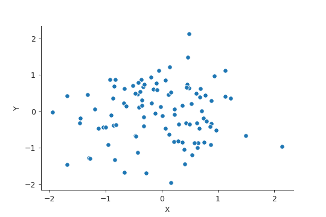
model1 = smf.ols("Y ~ X - 1", data=data).fit() model2 = smf.ols("X ~ Y - 1", data=data).fit()
print(model1.summary())
OLS Regression Results
=======================================================================================
Dep. Variable: Y R-squared (uncentered): 0.741
Model: OLS Adj. R-squared (uncentered): 0.738
Method: Least Squares F-statistic: 283.3
Date: Sat, 30 May 2020 Prob (F-statistic): 8.30e-31
Time: 00:47:09 Log-Likelihood: -138.87
No. Observations: 100 AIC: 279.7
Df Residuals: 99 BIC: 282.4
Df Model: 1
Covariance Type: nonrobust
==============================================================================
coef std err t P>|t| [0.025 0.975]
------------------------------------------------------------------------------
X 2.1196 0.126 16.833 0.000 1.870 2.369
==============================================================================
Omnibus: 2.995 Durbin-Watson: 1.681
Prob(Omnibus): 0.224 Jarque-Bera (JB): 2.970
Skew: 0.408 Prob(JB): 0.227
Kurtosis: 2.787 Cond. No. 1.00
==============================================================================
Warnings:
[1] Standard Errors assume that the covariance matrix of the errors is correctly specified.
print(model2.summary())
OLS Regression Results
=======================================================================================
Dep. Variable: X R-squared (uncentered): 0.741
Model: OLS Adj. R-squared (uncentered): 0.738
Method: Least Squares F-statistic: 283.3
Date: Sat, 30 May 2020 Prob (F-statistic): 8.30e-31
Time: 00:47:17 Log-Likelihood: -48.770
No. Observations: 100 AIC: 99.54
Df Residuals: 99 BIC: 102.1
Df Model: 1
Covariance Type: nonrobust
==============================================================================
coef std err t P>|t| [0.025 0.975]
------------------------------------------------------------------------------
Y 0.3496 0.021 16.833 0.000 0.308 0.391
==============================================================================
Omnibus: 1.369 Durbin-Watson: 1.557
Prob(Omnibus): 0.504 Jarque-Bera (JB): 1.145
Skew: -0.020 Prob(JB): 0.564
Kurtosis: 2.477 Cond. No. 1.00
==============================================================================
Warnings:
[1] Standard Errors assume that the covariance matrix of the errors is correctly specified.
Same coefficient estimates - numerical
We need \(∑_i x_i^2 = ∑_i y_i^2\). Setting \(X = Y\) works, but \(Y = \mathrm{Permutation}(X)\) would work too, and is more general.
rng = np.random.default_rng(seed=42) x = rng.normal(size=100) y = np.random.permutation(x) data = pd.DataFrame({"X" : x, "Y" : y}) plt.close("all") fig, ax = plt.subplots() sp = sns.scatterplot(x="X", y="Y", data=data, ax=ax) sns.despine() fig.savefig("img/3.12.b_data.png", dpi=90)

model3 = smf.ols("Y ~ X - 1", data=data).fit() model4 = smf.ols("X ~ Y - 1", data=data).fit()
print(model3.summary())
OLS Regression Results
=======================================================================================
Dep. Variable: Y R-squared (uncentered): 0.002
Model: OLS Adj. R-squared (uncentered): -0.008
Method: Least Squares F-statistic: 0.2018
Date: Sat, 30 May 2020 Prob (F-statistic): 0.654
Time: 00:52:14 Log-Likelihood: -116.23
No. Observations: 100 AIC: 234.5
Df Residuals: 99 BIC: 237.1
Df Model: 1
Covariance Type: nonrobust
==============================================================================
coef std err t P>|t| [0.025 0.975]
------------------------------------------------------------------------------
X 0.0451 0.100 0.449 0.654 -0.154 0.244
==============================================================================
Omnibus: 0.651 Durbin-Watson: 1.772
Prob(Omnibus): 0.722 Jarque-Bera (JB): 0.787
Skew: -0.142 Prob(JB): 0.675
Kurtosis: 2.671 Cond. No. 1.00
==============================================================================
Warnings:
[1] Standard Errors assume that the covariance matrix of the errors is correctly specified.
print(model4.summary())
OLS Regression Results
=======================================================================================
Dep. Variable: X R-squared (uncentered): 0.002
Model: OLS Adj. R-squared (uncentered): -0.008
Method: Least Squares F-statistic: 0.2018
Date: Sat, 30 May 2020 Prob (F-statistic): 0.654
Time: 00:52:20 Log-Likelihood: -116.23
No. Observations: 100 AIC: 234.5
Df Residuals: 99 BIC: 237.1
Df Model: 1
Covariance Type: nonrobust
==============================================================================
coef std err t P>|t| [0.025 0.975]
------------------------------------------------------------------------------
Y 0.0451 0.100 0.449 0.654 -0.154 0.244
==============================================================================
Omnibus: 0.296 Durbin-Watson: 1.833
Prob(Omnibus): 0.862 Jarque-Bera (JB): 0.446
Skew: -0.105 Prob(JB): 0.800
Kurtosis: 2.749 Cond. No. 1.00
==============================================================================
Warnings:
[1] Standard Errors assume that the covariance matrix of the errors is correctly specified.
Question 13
Feature vector
rng = np.random.default_rng(seed=42) x = rng.normal(loc=0, scale=1, size=100)
Error vector
eps = rng.normal(loc=0, scale=0.25, size=100)
Response vector
y = -1 + 0.5 * x + eps
The length of y is 100, and \(β_0 = -1\), and \(β_1 = 0.5\).
Scatter plot
df = pd.DataFrame({"x" : x, "y" : y}) plt.close("all") sp = sns.jointplot(x="x", y="y", data=df) # jointplot also gives the distributions of x and y in addition to the scatter plot sns.despine() sp.savefig("img/3.13.d_scatter.png", dpi=90)
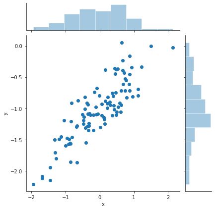
We can see a clear linear trend between x and y.
Least squares fit
model = smf.ols("y ~ x", data=df).fit() print(model.summary())
OLS Regression Results
==============================================================================
Dep. Variable: y R-squared: 0.740
Model: OLS Adj. R-squared: 0.738
Method: Least Squares F-statistic: 279.2
Date: Sat, 30 May 2020 Prob (F-statistic): 1.94e-30
Time: 03:07:58 Log-Likelihood: -0.24351
No. Observations: 100 AIC: 4.487
Df Residuals: 98 BIC: 9.697
Df Model: 1
Covariance Type: nonrobust
==============================================================================
coef std err t P>|t| [0.025 0.975]
------------------------------------------------------------------------------
Intercept -1.0012 0.025 -40.774 0.000 -1.050 -0.952
x 0.5298 0.032 16.709 0.000 0.467 0.593
==============================================================================
Omnibus: 2.996 Durbin-Watson: 1.682
Prob(Omnibus): 0.224 Jarque-Bera (JB): 2.971
Skew: 0.409 Prob(JB): 0.226
Kurtosis: 2.787 Cond. No. 1.30
==============================================================================
Warnings:
[1] Standard Errors assume that the covariance matrix of the errors is correctly specified.
The estimates for \(β_0\) and \(β_1\) are almost equal to the true values. The true values fall within the 95% confidence interval of the estimated values.
ypred = model.predict(df["x"]) plt.close("all") fig, ax = plt.subplots() ax.plot(x, y, 'o', label="Data") ax.plot(x, ypred, 'r', label="Least Squares Regression") ax.legend(loc="best") sns.despine() fig.savefig("img/3.13.f_ols.png", dpi=90)
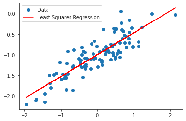
Polynomial regression
poly_model = smf.ols(formula="y ~ x + I(x**2)", data=df).fit() print(poly_model.summary())
OLS Regression Results
==============================================================================
Dep. Variable: y R-squared: 0.746
Model: OLS Adj. R-squared: 0.741
Method: Least Squares F-statistic: 142.6
Date: Sat, 30 May 2020 Prob (F-statistic): 1.30e-29
Time: 03:32:56 Log-Likelihood: 0.93852
No. Observations: 100 AIC: 4.123
Df Residuals: 97 BIC: 11.94
Df Model: 2
Covariance Type: nonrobust
==============================================================================
coef std err t P>|t| [0.025 0.975]
------------------------------------------------------------------------------
Intercept -0.9732 0.031 -31.881 0.000 -1.034 -0.913
x 0.5200 0.032 16.177 0.000 0.456 0.584
I(x ** 2) -0.0474 0.031 -1.523 0.131 -0.109 0.014
==============================================================================
Omnibus: 2.591 Durbin-Watson: 1.731
Prob(Omnibus): 0.274 Jarque-Bera (JB): 2.542
Skew: 0.380 Prob(JB): 0.281
Kurtosis: 2.818 Cond. No. 2.08
==============================================================================
Warnings:
[1] Standard Errors assume that the covariance matrix of the errors is correctly specified.
The \(R^2\) values of both the models are pretty much the same. Additionally the p-value of the quadratic term is not zero. The quadratic term does not improve the model fit.
Least squares fit with less noise
The new data is as follows. The spread of the noise is now 0.1 instead of 0.25.
eps = rng.normal(loc=0, scale=0.1, size=100) y = -1 + 0.5 * x + eps df2 = pd.DataFrame({"x" : x, "y" : y}) plt.close("all") sp = sns.jointplot(x="x", y="y", data=df2) # jointplot also gives the distributions of x and y in addition to the scatter plot sns.despine() sp.savefig("img/3.13.h_scatter.png", dpi=90)
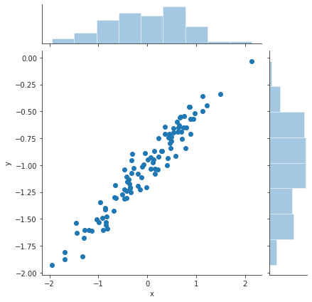
Now the least squares fit to this data.
less_noisy_model = smf.ols("y ~ x", data=df2).fit() print(less_noisy_model.summary())
OLS Regression Results
==============================================================================
Dep. Variable: y R-squared: 0.935
Model: OLS Adj. R-squared: 0.934
Method: Least Squares F-statistic: 1403.
Date: Sat, 30 May 2020 Prob (F-statistic): 7.01e-60
Time: 03:39:50 Log-Likelihood: 86.452
No. Observations: 100 AIC: -168.9
Df Residuals: 98 BIC: -163.7
Df Model: 1
Covariance Type: nonrobust
==============================================================================
coef std err t P>|t| [0.025 0.975]
------------------------------------------------------------------------------
Intercept -1.0063 0.010 -97.523 0.000 -1.027 -0.986
x 0.4991 0.013 37.458 0.000 0.473 0.526
==============================================================================
Omnibus: 3.211 Durbin-Watson: 1.893
Prob(Omnibus): 0.201 Jarque-Bera (JB): 2.554
Skew: 0.345 Prob(JB): 0.279
Kurtosis: 3.371 Cond. No. 1.30
==============================================================================
Warnings:
[1] Standard Errors assume that the covariance matrix of the errors is correctly specified.
The \(R^2\) value for this data set is much larger than the original data set. The model is able to explain 93% of the less noisy data, whereas it could only explain around 70% of the original data set.
ypred = less_noisy_model.predict(df2["x"]) plt.close("all") fig, ax = plt.subplots() ax.plot(x, y, 'o', label="Data") ax.plot(x, ypred, 'r', label="Least Squares Regression") ax.legend(loc="best") sns.despine() fig.savefig("img/3.13.h_ols.png", dpi=90)
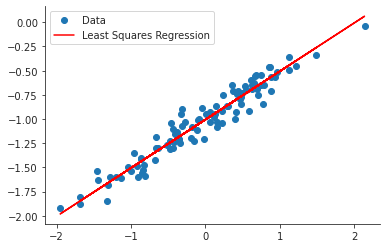
Least squares fit with more noise
The new data is as follows. The spread of the noise is now 0.5 instead of 0.25.
eps = rng.normal(loc=0, scale=0.5, size=100) y = -1 + 0.5 * x + eps df3 = pd.DataFrame({"x" : x, "y" : y}) plt.close("all") sp = sns.jointplot(x="x", y="y", data=df3) sns.despine() sp.savefig("img/3.13.i_scatter.png", dpi=90)
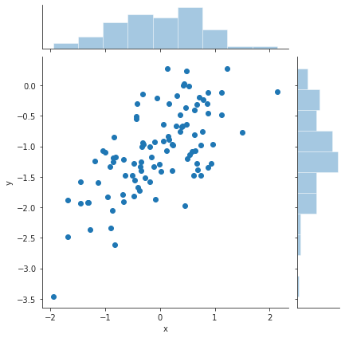
Now the least squares fit to this data.
more_noisy_model = smf.ols("y ~ x", data=df3).fit() print(more_noisy_model.summary())
OLS Regression Results
==============================================================================
Dep. Variable: y R-squared: 0.430
Model: OLS Adj. R-squared: 0.424
Method: Least Squares F-statistic: 74.01
Date: Sat, 30 May 2020 Prob (F-statistic): 1.29e-13
Time: 03:45:50 Log-Likelihood: -75.586
No. Observations: 100 AIC: 155.2
Df Residuals: 98 BIC: 160.4
Df Model: 1
Covariance Type: nonrobust
==============================================================================
coef std err t P>|t| [0.025 0.975]
------------------------------------------------------------------------------
Intercept -1.0417 0.052 -19.971 0.000 -1.145 -0.938
x 0.5794 0.067 8.603 0.000 0.446 0.713
==============================================================================
Omnibus: 0.119 Durbin-Watson: 1.889
Prob(Omnibus): 0.942 Jarque-Bera (JB): 0.294
Skew: -0.029 Prob(JB): 0.863
Kurtosis: 2.741 Cond. No. 1.30
==============================================================================
Warnings:
[1] Standard Errors assume that the covariance matrix of the errors is correctly specified.
The \(R^2\) value for this data set is much smaller than it was for the original data set. The model is able to explain only 43% of the more noisy data, whereas it could explain around 70% of the original data.
ypred = more_noisy_model.predict(df3["x"]) plt.close("all") fig, ax = plt.subplots() ax.plot(x, y, 'o', label="Data") ax.plot(x, ypred, 'r', label="Least Squares Regression") ax.legend(loc="best") sns.despine() fig.savefig("img/3.13.i_ols.png", dpi=90)
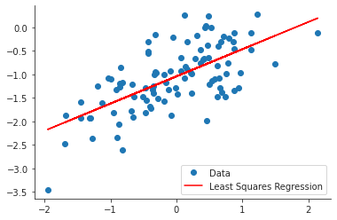
From the graph it appears that there are possible outliers, which is not surprising given the spread of the error.
Confidence intervals of the three models
print("Confidence interval based on original data set:\n") print(f"{model.conf_int()}\n") print("Confidence interval based on less noisy data set:\n") print(f"{less_noisy_model.conf_int()}\n") print("Confidence interval based on more noisy data set:\n") print(f"{more_noisy_model.conf_int()}\n")
Confidence interval based on original data set:
0 1
Intercept -1.049887 -0.952433
x 0.466873 0.592714
Confidence interval based on less noisy data set:
0 1
Intercept -1.026756 -0.985803
x 0.472653 0.525535
Confidence interval based on more noisy data set:
0 1
Intercept -1.145197 -0.938180
x 0.445752 0.713071
The confidence intervals for the less noisy data set are the tightest and the confidence intervals for the more noisy data set are the loosest.
Question 14
Multiple linear model with collinearity
from numpy.random import MT19937 rng = np.random.default_rng(MT19937(seed=5)) x1 = rng.uniform(size=100) x2 = 0.5 * x1 + rng.normal(size=100) / 10 y = 2 + 2 * x1 + 0.3 * x2 + rng.normal(size=100) df_coll = pd.DataFrame({"x1" : x1, "x2" : x2, "y" : y})
The form of the linear model is
\begin{align} Y = 2 + 2 X_1 + 0.3 X_2 + ϵ. \end{align}Correlation scatter plot
corr = df_coll.corr() print(corr)
x1 x2 y
x1 1.00000 0.76818 0.55569
x2 0.76818 1.00000 0.45415
y 0.55569 0.45415 1.00000
The correlation between x1 and x2 is 0.768.
plt.close("all") fig, ax = plt.subplots() sp = sns.scatterplot(x="x1", y="x2", data=df_coll, ax=ax) sns.despine() fig.savefig("img/3.14.a_scatter.png", dpi=90)
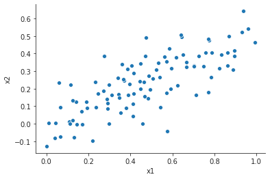
Least squares fit with x1 and x2
coll_model1 = smf.ols("y ~ x1 + x2", data=df_coll).fit() print(coll_model1.summary())
OLS Regression Results
==============================================================================
Dep. Variable: y R-squared: 0.311
Model: OLS Adj. R-squared: 0.296
Method: Least Squares F-statistic: 21.85
Date: Sat, 30 May 2020 Prob (F-statistic): 1.46e-08
Time: 04:51:30 Log-Likelihood: -133.37
No. Observations: 100 AIC: 272.7
Df Residuals: 97 BIC: 280.6
Df Model: 2
Covariance Type: nonrobust
==============================================================================
coef std err t P>|t| [0.025 0.975]
------------------------------------------------------------------------------
Intercept 1.8690 0.194 9.651 0.000 1.485 2.253
x1 2.1749 0.568 3.832 0.000 1.048 3.301
x2 0.4454 0.881 0.505 0.614 -1.304 2.194
==============================================================================
Omnibus: 0.484 Durbin-Watson: 1.964
Prob(Omnibus): 0.785 Jarque-Bera (JB): 0.623
Skew: -0.140 Prob(JB): 0.732
Kurtosis: 2.734 Cond. No. 12.2
==============================================================================
Warnings:
[1] Standard Errors assume that the covariance matrix of the errors is correctly specified.
The estimated values for the coefficients are 1.869, 2.175, and 0.445 which are close to the true values, albeit with large standard errors, particularly for \(\hat{β}_2\). Based on the p-values we can reject the null hypothesis for \(β_1\), but we cannot reject the null-hypothesis for \(β_2\).
Least squares fit with x1 only
coll_model2 = smf.ols("y ~ x1", data=df_coll).fit() print(coll_model2.summary())
OLS Regression Results
==============================================================================
Dep. Variable: y R-squared: 0.309
Model: OLS Adj. R-squared: 0.302
Method: Least Squares F-statistic: 43.78
Date: Sat, 30 May 2020 Prob (F-statistic): 1.96e-09
Time: 04:51:44 Log-Likelihood: -133.50
No. Observations: 100 AIC: 271.0
Df Residuals: 98 BIC: 276.2
Df Model: 1
Covariance Type: nonrobust
==============================================================================
coef std err t P>|t| [0.025 0.975]
------------------------------------------------------------------------------
Intercept 1.8690 0.193 9.688 0.000 1.486 2.252
x1 2.3952 0.362 6.617 0.000 1.677 3.114
==============================================================================
Omnibus: 0.538 Durbin-Watson: 1.940
Prob(Omnibus): 0.764 Jarque-Bera (JB): 0.650
Skew: -0.160 Prob(JB): 0.723
Kurtosis: 2.768 Cond. No. 4.80
==============================================================================
Warnings:
[1] Standard Errors assume that the covariance matrix of the errors is correctly specified.
The coefficient value has increased, and the \(R^2\) value has decreased marginally. We can still reject the null hypothesis based on the p-value.
Least squares fit with x2 only
coll_model3 = smf.ols("y ~ x2", data=df_coll).fit() print(coll_model3.summary())
OLS Regression Results
==============================================================================
Dep. Variable: y R-squared: 0.206
Model: OLS Adj. R-squared: 0.198
Method: Least Squares F-statistic: 25.46
Date: Sat, 30 May 2020 Prob (F-statistic): 2.08e-06
Time: 04:51:59 Log-Likelihood: -140.42
No. Observations: 100 AIC: 284.8
Df Residuals: 98 BIC: 290.0
Df Model: 1
Covariance Type: nonrobust
==============================================================================
coef std err t P>|t| [0.025 0.975]
------------------------------------------------------------------------------
Intercept 2.2853 0.171 13.355 0.000 1.946 2.625
x2 3.0393 0.602 5.046 0.000 1.844 4.235
==============================================================================
Omnibus: 0.036 Durbin-Watson: 2.117
Prob(Omnibus): 0.982 Jarque-Bera (JB): 0.064
Skew: -0.038 Prob(JB): 0.969
Kurtosis: 2.902 Cond. No. 6.38
==============================================================================
Warnings:
[1] Standard Errors assume that the covariance matrix of the errors is correctly specified.
The coefficient value is much larger now, but the \(R^2\) value has decreased. We can now reject the null hypothesis based on the p-value.
Contradiction of models
The three models do not contradict each other. Due to the high correlation
between x1 and x2, we can predict x2 from x1. Thus in the original model
x2 has very little explanatory power and so we cannot reject the null
hypothesis for \(β_2\).
For the second and third model the explanation for the
increase in the coefficients is as follows. In the second model we are
expressing x2 in terms of x1, and so the coefficient of x1 in the
expression for y increases to 2.3. In the third model we are expressing x1
in terms of x2, and so the coefficient of x2 in the expression for y
increases to 4.3. The 95% confidence interval of the second model includes the
new true value of the coefficient. Even though the 95% confidence interval of
the third model does not include the new true value of the coefficient it comes
close. This is probably due to the difference between the random number
generators used by R and numpy.
Additional data
df_coll = df_coll.append({"x1" : 0.1, "x2" : 0.8, "y" : 6}, ignore_index=True) coll_model1 = smf.ols("y ~ x1 + x2", data=df_coll).fit() coll_model2 = smf.ols("y ~ x1", data=df_coll).fit() coll_model3 = smf.ols("y ~ x2", data=df_coll).fit()
print(coll_model1.summary())
OLS Regression Results
==============================================================================
Dep. Variable: y R-squared: 0.295
Model: OLS Adj. R-squared: 0.281
Method: Least Squares F-statistic: 20.50
Date: Sat, 30 May 2020 Prob (F-statistic): 3.66e-08
Time: 04:56:57 Log-Likelihood: -138.91
No. Observations: 101 AIC: 283.8
Df Residuals: 98 BIC: 291.7
Df Model: 2
Covariance Type: nonrobust
==============================================================================
coef std err t P>|t| [0.025 0.975]
------------------------------------------------------------------------------
Intercept 1.9525 0.200 9.769 0.000 1.556 2.349
x1 1.2762 0.508 2.514 0.014 0.269 2.283
x2 2.0004 0.753 2.657 0.009 0.506 3.495
==============================================================================
Omnibus: 0.020 Durbin-Watson: 2.024
Prob(Omnibus): 0.990 Jarque-Bera (JB): 0.144
Skew: 0.018 Prob(JB): 0.931
Kurtosis: 2.819 Cond. No. 9.92
==============================================================================
Warnings:
[1] Standard Errors assume that the covariance matrix of the errors is correctly specified.
print(coll_model2.summary())
OLS Regression Results
==============================================================================
Dep. Variable: y R-squared: 0.244
Model: OLS Adj. R-squared: 0.237
Method: Least Squares F-statistic: 31.98
Date: Sat, 30 May 2020 Prob (F-statistic): 1.51e-07
Time: 04:57:04 Log-Likelihood: -142.43
No. Observations: 101 AIC: 288.9
Df Residuals: 99 BIC: 294.1
Df Model: 1
Covariance Type: nonrobust
==============================================================================
coef std err t P>|t| [0.025 0.975]
------------------------------------------------------------------------------
Intercept 2.0051 0.205 9.786 0.000 1.599 2.412
x1 2.1847 0.386 5.655 0.000 1.418 2.951
==============================================================================
Omnibus: 6.115 Durbin-Watson: 1.839
Prob(Omnibus): 0.047 Jarque-Bera (JB): 7.252
Skew: 0.308 Prob(JB): 0.0266
Kurtosis: 4.160 Cond. No. 4.76
==============================================================================
Warnings:
[1] Standard Errors assume that the covariance matrix of the errors is correctly specified.
print(coll_model3.summary())
OLS Regression Results
==============================================================================
Dep. Variable: y R-squared: 0.249
Model: OLS Adj. R-squared: 0.242
Method: Least Squares F-statistic: 32.90
Date: Sat, 30 May 2020 Prob (F-statistic): 1.06e-07
Time: 04:57:12 Log-Likelihood: -142.07
No. Observations: 101 AIC: 288.1
Df Residuals: 99 BIC: 293.4
Df Model: 1
Covariance Type: nonrobust
==============================================================================
coef std err t P>|t| [0.025 0.975]
------------------------------------------------------------------------------
Intercept 2.2419 0.168 13.365 0.000 1.909 2.575
x2 3.2762 0.571 5.736 0.000 2.143 4.409
==============================================================================
Omnibus: 0.044 Durbin-Watson: 2.139
Prob(Omnibus): 0.978 Jarque-Bera (JB): 0.040
Skew: -0.033 Prob(JB): 0.980
Kurtosis: 2.927 Cond. No. 6.09
==============================================================================
Warnings:
[1] Standard Errors assume that the covariance matrix of the errors is correctly specified.
The \(R^2\) values for models 1 and 2 decreased. This observation decreased the predictive power of the models. The average leverage for the data set is
p = len(df_coll.columns) n = len(df_coll) lev = (p + 1) / n print(f"{lev:.3f}")
0.040
plt.close("all") fig, ax = plt.subplots() rlplot = sm.graphics.influence_plot(coll_model1, criterion="Cooks", ax=ax) sns.despine() ax.set_xlabel("Leverage") ax.set_ylabel("Standardized Residuals") ax.set_title(" ") fig.savefig("img/3.14.g_coll1_res_vs_lev.png", dpi=90)
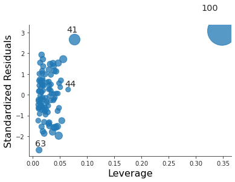
For the first model it is both an outlier and a high leverage point.
plt.close("all") fig, ax = plt.subplots() rlplot = sm.graphics.influence_plot(coll_model2, criterion="Cooks", ax=ax) sns.despine() ax.set_xlabel("Leverage") ax.set_ylabel("Standardized Residuals") ax.set_title(" ") fig.savefig("img/3.14.g_coll2_res_vs_lev.png", dpi=90)
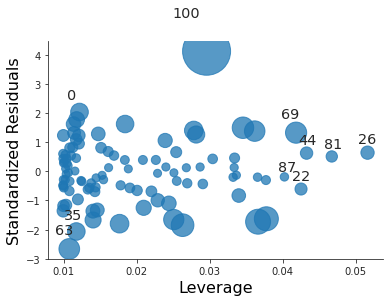
For the second model it is just an outlier.
plt.close("all") fig, ax = plt.subplots() rlplot = sm.graphics.influence_plot(coll_model3, criterion="Cooks", ax=ax) sns.despine() ax.set_xlabel("Leverage") ax.set_ylabel("Standardized Residuals") ax.set_title(" ") fig.savefig("img/3.14.g_coll3_res_vs_lev.png", dpi=90)
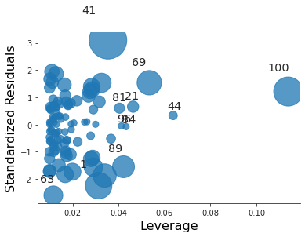
For the third model it is just an high leverage point.
Question 15
Predict per capita crime rate with the Boston data set
We load the Boston from statsmodels.
import statsmodels.api as sm boston = sm.datasets.get_rdataset("Boston", "MASS") print(boston.__doc__)
+--------+-----------------+ | Boston | R Documentation | +--------+-----------------+ Housing Values in Suburbs of Boston ----------------------------------- Description ~~~~~~~~~~~ The ``Boston`` data frame has 506 rows and 14 columns. Usage ~~~~~ :: Boston Format ~~~~~~ This data frame contains the following columns: ``crim`` per capita crime rate by town. ``zn`` proportion of residential land zoned for lots over 25,000 sq.ft. ``indus`` proportion of non-retail business acres per town. ``chas`` Charles River dummy variable (= 1 if tract bounds river; 0 otherwise). ``nox`` nitrogen oxides concentration (parts per 10 million). ``rm`` average number of rooms per dwelling. ``age`` proportion of owner-occupied units built prior to 1940. ``dis`` weighted mean of distances to five Boston employment centres. ``rad`` index of accessibility to radial highways. ``tax`` full-value property-tax rate per \\$10,000. ``ptratio`` pupil-teacher ratio by town. ``black`` *1000(Bk - 0.63)^2* where *Bk* is the proportion of blacks by town. ``lstat`` lower status of the population (percent). ``medv`` median value of owner-occupied homes in \\$1000s. Source ~~~~~~ Harrison, D. and Rubinfeld, D.L. (1978) Hedonic prices and the demand for clean air. *J. Environ. Economics and Management* **5**, 81–102. Belsley D.A., Kuh, E. and Welsch, R.E. (1980) *Regression Diagnostics. Identifying Influential Data and Sources of Collinearity.* New York: Wiley.
Earlier we are fitted medv to the other predictors, now we will be fitting
crim to the other predictors.
import statsmodels.formula.api as smf df = boston.data predictors = [c for c in df.columns if c != "crim"] simple_models = {p : smf.ols(formula=f"crim ~ {p}", data=df).fit() for p in predictors} print(f"predictor coefficient p-value") for p, model in simple_models.items(): print(f"{p:^9} {model.params[p]:>9,.4f} {model.pvalues[p]:>9,.4f}")
predictor coefficient p-value zn -0.0739 0.0000 indus 0.5098 0.0000 chas -1.8928 0.2094 nox 31.2485 0.0000 rm -2.6841 0.0000 age 0.1078 0.0000 dis -1.5509 0.0000 rad 0.6179 0.0000 tax 0.0297 0.0000 ptratio 1.1520 0.0000 black -0.0363 0.0000 lstat 0.5488 0.0000 medv -0.3632 0.0000
Except for chas everything else appears to be statistically significant.
import matplotlib.pyplot as plt import seaborn as sns from math import ceil sns.set_style("ticks") ncols = 4 nrows = ceil(len(predictors) / ncols) plt.close("all") fig, axs = plt.subplots(nrows=nrows, ncols=ncols, constrained_layout=True, figsize=(12, 10)) for i in range(nrows): for j in range(ncols): if i * ncols + j < len(predictors): sns.regplot(x=df[predictors[i * ncols + j]], y=df["crim"], ax=axs[i, j], line_kws={"color" : "r"}) sns.despine() fig.savefig("img/3.15.a_reg_mat.png", dpi=120)
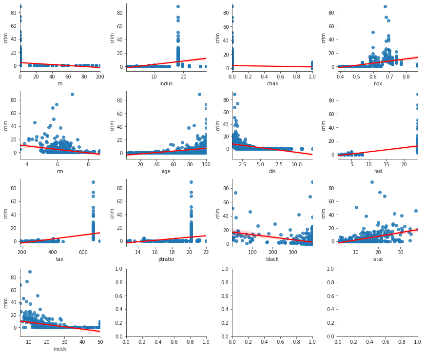
Multiple regression with Boston data set
Y = df['crim'] X = df[predictors] X = sm.add_constant(X) ml_model = sm.OLS(Y, X).fit() print(ml_model.summary())
OLS Regression Results
==============================================================================
Dep. Variable: crim R-squared: 0.454
Model: OLS Adj. R-squared: 0.440
Method: Least Squares F-statistic: 31.47
Date: Sat, 30 May 2020 Prob (F-statistic): 1.57e-56
Time: 12:26:02 Log-Likelihood: -1653.3
No. Observations: 506 AIC: 3335.
Df Residuals: 492 BIC: 3394.
Df Model: 13
Covariance Type: nonrobust
==============================================================================
coef std err t P>|t| [0.025 0.975]
------------------------------------------------------------------------------
const 17.0332 7.235 2.354 0.019 2.818 31.248
zn 0.0449 0.019 2.394 0.017 0.008 0.082
indus -0.0639 0.083 -0.766 0.444 -0.228 0.100
chas -0.7491 1.180 -0.635 0.526 -3.068 1.570
nox -10.3135 5.276 -1.955 0.051 -20.679 0.052
rm 0.4301 0.613 0.702 0.483 -0.774 1.634
age 0.0015 0.018 0.081 0.935 -0.034 0.037
dis -0.9872 0.282 -3.503 0.001 -1.541 -0.433
rad 0.5882 0.088 6.680 0.000 0.415 0.761
tax -0.0038 0.005 -0.733 0.464 -0.014 0.006
ptratio -0.2711 0.186 -1.454 0.147 -0.637 0.095
black -0.0075 0.004 -2.052 0.041 -0.015 -0.000
lstat 0.1262 0.076 1.667 0.096 -0.023 0.275
medv -0.1989 0.061 -3.287 0.001 -0.318 -0.080
==============================================================================
Omnibus: 666.613 Durbin-Watson: 1.519
Prob(Omnibus): 0.000 Jarque-Bera (JB): 84887.625
Skew: 6.617 Prob(JB): 0.00
Kurtosis: 65.058 Cond. No. 1.58e+04
==============================================================================
Warnings:
[1] Standard Errors assume that the covariance matrix of the errors is correctly specified.
[2] The condition number is large, 1.58e+04. This might indicate that there are
strong multicollinearity or other numerical problems.
Based on the p-values we can reject the null hypothesis for dis, rad, and
medv. If we are willing to be less accurate we can also reject the null
hypothesis for zn, nox, black, and lstat.
Comparison plot
import pandas as pd ml_coefs = ml_model.params sl_coefs = pd.Series({p : simple_models[p].params.loc[p] for p in predictors}) coef_df = pd.concat([sl_coefs, ml_coefs], axis=1) coef_df.reset_index(inplace=True) coef_df.columns = ["Predictors", "Simple OLS Coefficient", "Multiple OLS Coefficient"] coef_df.dropna(inplace=True) print(coef_df)
Predictors Simple OLS Coefficient Multiple OLS Coefficient 0 zn -0.073935 0.044855 1 indus 0.509776 -0.063855 2 chas -1.892777 -0.749134 3 nox 31.248531 -10.313535 4 rm -2.684051 0.430131 5 age 0.107786 0.001452 6 dis -1.550902 -0.987176 7 rad 0.617911 0.588209 8 tax 0.029742 -0.003780 9 ptratio 1.151983 -0.271081 10 black -0.036280 -0.007538 11 lstat 0.548805 0.126211 12 medv -0.363160 -0.198887
plt.close("all") fig, ax = plt.subplots() sns.scatterplot(x="Simple OLS Coefficient", y="Multiple OLS Coefficient", data=coef_df, ax=ax) sns.despine() fig.savefig("img/3.15.c_comp_plot.png")
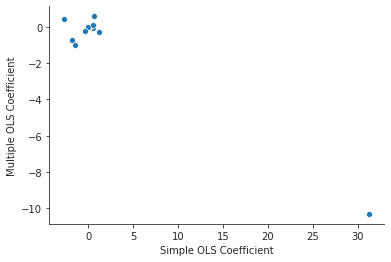
The coefficients for nox are very different in the two models.
Evidence of non-linear associations
We will use scikit-learn to generate the non-linear features.
from sklearn.preprocessing import PolynomialFeatures pd.options.display.float_format = "{:,.3f}".format Y = df['crim'] poly_features = PolynomialFeatures(degree=3) poly_predictors = {p : poly_features.fit_transform(df[p][:, None]) for p in predictors} poly_models = {p : sm.OLS(Y, poly_predictors[p]).fit() for p in predictors} for p in predictors: print(f"p-values for {p}:") print(f"{poly_models[p].pvalues}\n")
p-values for zn: const 0.000 x1 0.003 x2 0.094 x3 0.230 dtype: float64 p-values for indus: const 0.020 x1 0.000 x2 0.000 x3 0.000 dtype: float64 p-values for chas: const 0.000 x1 0.209 x2 0.209 x3 0.209 dtype: float64 p-values for nox: const 0.000 x1 0.000 x2 0.000 x3 0.000 dtype: float64 p-values for rm: const 0.081 x1 0.212 x2 0.364 x3 0.509 dtype: float64 p-values for age: const 0.358 x1 0.143 x2 0.047 x3 0.007 dtype: float64 p-values for dis: const 0.000 x1 0.000 x2 0.000 x3 0.000 dtype: float64 p-values for rad: const 0.768 x1 0.623 x2 0.613 x3 0.482 dtype: float64 p-values for tax: const 0.105 x1 0.110 x2 0.137 x3 0.244 dtype: float64 p-values for ptratio: const 0.002 x1 0.003 x2 0.004 x3 0.006 dtype: float64 p-values for black: const 0.000 x1 0.139 x2 0.474 x3 0.544 dtype: float64 p-values for lstat: const 0.554 x1 0.335 x2 0.065 x3 0.130 dtype: float64 p-values for medv: const 0.000 x1 0.000 x2 0.000 x3 0.000 dtype: float64
From the p-values we see that there is evidence of polynomial association
between the response and the predictors indus, nox, age, dis, ptratio,
and medv.